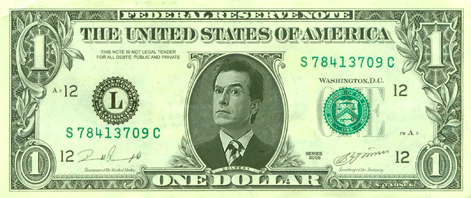

Stephen Colbert for President! - 2016
- I Am America! And So Can You! -
- HOME -
On October 16, 2007, satirist Stephen Colbert officially announced that he would run for President of the United States (of South Carolina). This came after weeks of being pressured to do so by the public and stating that he would need a sign, which came from Aragorn giving him the sword Anduril. Although the legitimacy of his campaign was questioned, he promises and maintains that he is serious. Colbert had originally planned to run for both the Republican and the Democratic nomination in his home state of South Carolina, but felt it would be unfair for any/every other canidate in America. He has three possible running mates in mind. These possibilities include Vladimir Putin, Bart Simpson and himself.
